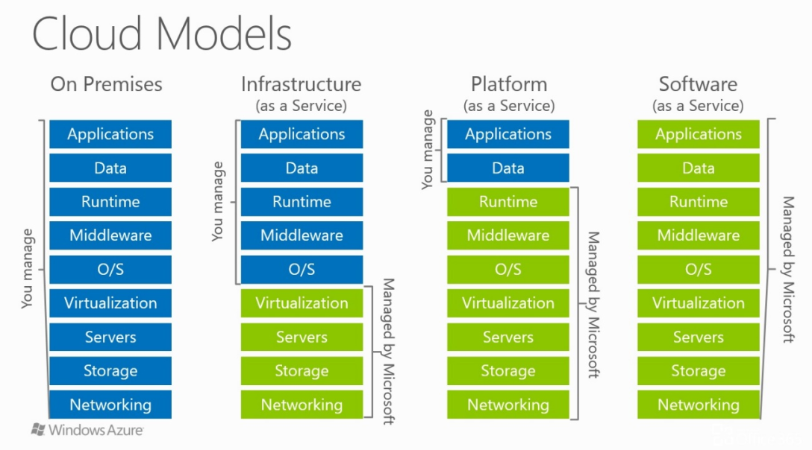

Web Security
Andreas Happe
Webapplikation?
Definition?
- Client-Server Applikation
- Web-Browser/-Client als Client
- Verwendet HTTP
Client-Server Applikation
- Client schickt Request zum Server
- Server bearbeitet diesen im Auftrag des Clients
- Server schickt Antwort zum Client zurück
HTTP - Versionen
| Jahr | Version | Bemerkung |
|---|---|---|
| 1989 | - | CERN |
| 1991 | HTTP/0.9 | |
| 1997 | HTTP/1.1 | |
| 2015 | HTTP/2 | SPDY, semi-TLSv1.3, ~66% |
| 2018 | HTTP/3 | HTTP-over-QUIC, UDP |
1989: Tim Berners-Lee
- The Hoff – Looking for Freedom
1991: HTTP 0.9
- Metallica – Nothing else Matters

HTTP Request
GET / HTTP/1.1
Host: www.example.com
User-Agent: Mozilla/5.0 (X11; Fedora; Linux x86_64; rv:73.0) Gecko/20100101 Firefox/73.0
Accept: text/html,application/xhtml+xml,application/xml;q=0.9,image/webp,*/*;q=0.8
Accept-Language: en-US,en;q=0.5HTTP Verben
| Verb | Verwendung | Safe | Idempotent |
|---|---|---|---|
| GET | Abfrage von Informationen | x | x |
| HEAD | Abfrage von Meta-Informationen | x | x |
| OPTIONS | Abfrage von Meta-Informationen | x | x |
| PUT | Neues Objekt hochladen | x | |
| DELETE | Löschen eines Objektes | x | |
| POST | Erstellen von Objekten | ||
| PATCH | Updaten eines Objektes |
HTTP Response
HTTP/1.1 200 OK
Date: Mon, 23 May 2005 22:38:34 GMT
Content-Type: text/html; charset=UTF-8
Content-Length: 138
Last-Modified: Wed, 08 Jan 2003 23:11:55 GMT
Server: Apache/1.3.3.7 (Unix) (Red-Hat/Linux)
ETag: "3f80f-1b6-3e1cb03b"
Accept-Ranges: bytes
Connection: close
<html>
<head><title>Wohoo!</title></head>
<body><p>Hello World!!!1</p></body>
</html>HTTP Statuscode
| Statuscode | Verwendung |
|---|---|
| 1xx | Information (continue, protocol switch) |
| 2xx | Erfolgreich |
| 3xx | Umleitungen |
| 4xx | Client-Fehler (inkl.Authentication) |
| 5xx | Server-Fehler |
1994: Session und Cookies
- Ace of Base – I Saw The Sign

HTTP-an-sich
- HTTP: Zustandsloses Protokoll
- warum ist das problematisch?
Lösung? Sessions
- Interaktive Sessions werden zumeist mittels Cookies gebaut
- Werden automatisch vom Browser zu Requests hinzugefügt
Beispiele für Cookies
Server -> Browser
Set-Cookie: cookiename=somevalueBrowser -> Server
Cookie: cookiename=somevalueFirst ideas that this might be abused
1995: JavaScript
- Coolio - Gangster’s Paradise
JavaScript
- ursprünglich als Hack (Mozilla)
- wird im Browser ausgeführt
- Gedacht für Benutzerinteraktionen
- Single-Threaded Event-Based Response-Loop
Geschichte
| Datum | Event | Bemerkung |
|---|---|---|
| 1995/1996 | Released als Teil von NS2 | mehr Scheme als Java |
| 1996 | JScript im IE | |
| 1997 | ECMAScript 1 | Versuch der Standardisierung |
| 2004 | IE mit 95% Marktanteil | MS: kein Interesse an Standardisieurng |
| 2009 | ECMAScript 5 | Warum? Chrome |
Geschichte
| Datum | Event | Bemerkung |
|---|---|---|
| 2015 | ECMAScript 6 | Module, Klassen, Arrow-Funktionen, Promises, .. |
| 2016 | ECMAScript 7 | async/await |
| .. | ~ eine jährliche Release |
Parallel zur Sprachentwicklung
- immer mehr Funktionalität kann per JavaScript angesprochen werden
- Initialer Wunsch: Zugriff auf Web-Services/Operationen
Same-Origin Policy (NS 2.02)
Zugriff von Javascript auf eine Resource wird nur erlaubt, wenn die Seite welche Javascript inkludiert und die zugegriffene Resource die gleiche Origin verwenden.
Origin-vs-Site
- Origin: Schema+FQDN+Port
- e.g., https://snikt.net:443
- Site: public known suffix + 1
Beispiele
| url1 | url2 | same-site | same-origin |
|---|---|---|---|
| https://snikt.net | https://mybloodtypeis.coffee | nein | nein |
| https://snikt.net/a | https://snikt.net/b | ja | ja |
| http://snikt.net | https://snikt.net | ja | nein |
| https://a.snikt.net | https://b.snikt.net | ja | nein |
| https://a.github.io | https://b.github.io | nein | nein |
SPA: Let’s build rich-clients ~ 2003

Single-Page Applications (SPA)
- nur eine statische HTML-Seite
- alle weiteren Elemente werden mittels JavaScript geladen
- thick-client im Webbrowser
Mittlerweile:
- im Hintergrund gerne API-Server, code re-use
- warum mittlerweile?
PWA: one more thing.. ~ 2007

HTML5, etc.: mehr Fähigkeiten
- HTML5-Storage
- WebWorker, WebAssembly
- Neue Kommunikationswege
- WebSockets
- WebRTC
- postMessage
- WebAuthn für 2FA
- Zugriff auf Sensoren (WebNFC, WebBluetooth)
- WebVR -> WebXR
web3
- “decentralized online ecosystem based on blockchain” (Gavin Wood)
- Vaporware?
- Moxie: my first impressions of web3
That’s the story so far..
Innerer Aufbau einer Web-Applikaton
Klassiche Architektur
- Server: Geschäftslogik
- Client (Webbrowser) dient nur zur Darstellung
Server
- gesamte Business-Logik ist am Server
- Projekt-Struktur: MVC-Pattern
- Routing (welche Operationen werden dargestellt)
MVC-Pattern (in theory)

MVC-Pattern (more often)

On Filesystem
application
+ app
+ controller
- notes_controller.rb
+ models
- notes.rb
- users.rb
+ views
+ notes
- show.html.erb
- edit.html.erb
- create.html.erb
- index.html.erb
+ config
- routes.confImplizites Routing
Matching über Dateinamen
Webroot: Verzeichnis am Server, in dem eine Webapplikation sich befindet (z.B. /var/www/ unter Linux)
Implizites Routing: Beispiel
$ ls /var/www/app # webroot für www.snikt.net
upload.php # www.snikt.net/upload.php
list.php # www.snikt.net/list.phpProblem:
Explizites Routing
Im Source-Code werden genau die verfügbaren Operationen definiert:
REST
Standard für CRUD-Functionality
| URL | Method | Operation |
|---|---|---|
| /notes/ | GET | list notes |
| /notes/ | POST | create note |
| /notes/123 | GET | show note |
| /notes/123 | DELETE | remove note |
| /notes/123 | PUT | update note |
RESTful Routing in RoR
Client-Side
- eher zur Benutzerinteraktion gedacht
- nur noch JavaScript
- auch hier werden nun Frameworks eingesetzt (react, angular, vue)
Integration mit Anderen
Eine Web-Applikation allein meist etwas wenig
- ist quasi nur der Applikationscode
- Daten müssen gespeichert werden
Minimales Setup

But then, customer happens..

Problem 1: Attack Surface
Problem 2: Admin-Verantwortlichkeiten
Admin, Dev, Betreiber
FIN
Company-Architekturen
Moat-and-Castle / Perimeter-Security

Defense-in-Depth

BeyondCorp / Zerotrust
- instead of trusting the network you connect from
- access to services is granted based on what we know about you and your devices
- all access to services must be authenticated, authorized and encrypted
Impact für uns?
zumeist sind Services als Webapplikationen implementiert
Single-SignOn, MFA
Authentication/Authorization